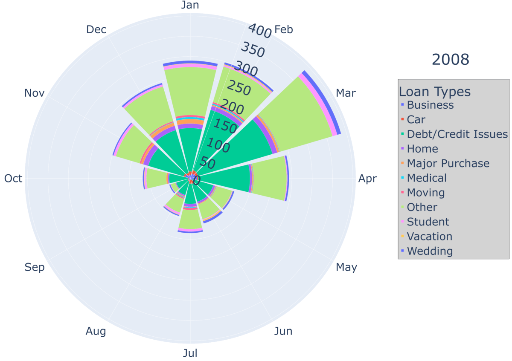

Photo downloaded from Unsplash: Credits - Tierra Mallorca
LendingClub is a financial technology company that has had over 4 million members since 2007. The ‘fintech’ company offers customers banking and loan opportunities. Something that has interested me in recent years has revolved around understanding how loan applicants are accepted. Through a Kaggle dataset (George (2019)), I was able to track loan applicants that applied for loans through LendingClub (reference). The data spans 11 years, from 2007 to 2018, and contains two tables: a rejected and an accepted loan applicant table.
Note
You can find the link to my full code and documentation here: GitHub Repository
The accepted applicant table contains approximately 2 million rows and lists over 150 features. The rejected applicant table extends out to about 27 million rows, and has exactly 9 feastures. To understand all of the different features, a separate Kaggle resource was used that identifies the columns that appear in the dataset (Chan (2018)).
Goals and Introduction to Features
Although some features were easy to understand, many columns were entreched in financial terminology or were related to the applicant following their acceptance. My goal for the analysis was to focus on features that were easily understandable, and were characteristics of the customer. By the end of my analysis, I wanted to describe loan applicants and build a model using some of the features. I defined seven different questions that tackled unique aspects of the data.
Question 1: Is employment length related to the acceptance of loans?
Question 2: Is there a tendency for specific loans to be given during certain months?
Question 3: What is the frequency of accepted and rejected loans throughout the United States?
Question 4: Does the ratio of the amount funded over the amount requested change based on hardship flag, home ownership, and application type?
Question 5: Does an applicant’s FICO score change the interest rate they receive?
Question 6: Is there a bound to the Debt-To-Income (DTI) ratio so customers below a limit cannot be accepted?
Question 7: Using the matching features between accepted and rejected data, can the data effectively predict whether a candidate will be accepted or rejected?
Imports for Project
Code
import pandas as pdimport numpy as npimport matplotlib.pyplot as pltimport plotly.io as pioimport plotly.express as pximport geopandas as gpdimport fionaimport matplotlibimport seaborn as snsfrom sklearn.ensemble import VotingClassifierfrom sklearn.metrics import classification_report, confusion_matrixfrom sklearn.tree import DecisionTreeClassifierfrom sklearn.linear_model import LogisticRegressionfrom sklearn.neighbors import KNeighborsClassifier as knnimport math as mfrom sklearn.model_selection import train_test_splitfrom statsmodels.stats.outliers_influence import variance_inflation_factorfrom sklearn import preprocessing#from plotnine import ggplot, geom_point, aes, stat_smooth, facet_wrap
Preprocessing the Data
Before answering the above questions, the data needed to be shaped and organized. A mix of cleaning techniques were used to break the raw csv files into distinct tables: a ZIP Code table, a model table, and an accepted applicant table.
Important
Not every piece of processing code will be displayed. Key decisions and general steps will be listed; however, I want to limit the amount of code listed here and encourage you to visit the repository.
The two files being imported are large in size and could not be uploaded to the Github repository.
Now that the files have been imported, the first thing I do is create a csv for ZIP Codes. Both raw tables contain applicants’ first three digits of their ZIP Code. A new dataset will combine both ZIP Code columns and applicant result columns. There are a few missing values in the data that will be dropped.
The next table I will be making pulls accepted loan applications. To clean the columns I defined how many missing values were in each feature. Then, I decided to remove columns that contained at least 30% missing values.
After looking over the columns, I reduced the number of columns even further. I selected columns that would be most related to the questions I planned to answer. Then, I took the percentage of values I would have left if I decided to drop the NA rows. With a remaining 91%, I decided it would be better to drop the missing values instead of attempting to replace them. Lastly, I change the type of the FICO score columns and the policy code to integers. The final table consisted of 17 features.
Lastly, I wanted a build a table that combined both accpeted and rejected loan applicants. Of the now 10 columns in the rejected table, added the applicant result, I dropped the Risk_Score column because it contained to many missing values (~18 million). The remaining columns will have their missing values dropped. Another edit that needed to be made was changing the debt-to-income ratio column to be a float type. To do this, I removed the percent sign and converted the type.
Next, I used the sample method to take 100000 rows from each table and concatenated them to form a new table. Finally, all three tables were written as csv files.
Is employment length related to the acceptance of loans?
To analyze the employment length, I bult a grouped bar chart comparing loan applicants that were accepted and rejected. This was taken using the model data that randomly sampled both candidates.
To address the immediately obvious elephant in the room, many of the rejected candidates claim that they have been at their job for less than a year. Being honest is usually good for you, but in this case it appears having less than a years experience is detrimental. Figure 1
Is there a tendency for specific loans to be given during certain months?
Utilizing natural language processing and some manual identification (nlpcode?), I was able to group many of the different reasons applicants applied for loans. This was reflected in a rose chart that is labeled by month and takes all accepted applicant data from 2007-2018.
Looking at the rose chart Figure 2, we can observe a couple things. Firstly, three of the 12 months have a noticeable drop in overall accepted applicant counts. Why is there a drop? It is not entirely clear. Nothing jumps out as an explanation while doing some Googling. It might be a situation unique to LendingClub.
However, I can shed some light on whether the pattern is consistent for each year or different. By creating a gif, we can observe the yearly changes in counts by month.

Different LendingClub Loan Applications by Month and Year
Note
Note that the gif ranges from 2008 to 2018. It does not cover 2007 because LendingClub had small counts for that year and did not accept candidates in every month.
What is the frequency of accepted and rejected loans throughout the United States?
LendingClub has had over 4 million members since 2007 stemming from across the United States. So, what does the acceptance rate look like across the U.S.? Using census data, I made a choropleth graphic visualizing the acceptance rate across 48 of the states–sorry Alaska and Hawaii. Alaska and Hawaii citizens can apply for loans via LendingClub; but, they are not included because it stretches the choropleth.
The interesting thing that stands out is the large, scary space outlining the state of Iowa. As of the dates collected from the Kaggle dataset, Iowa did not allow their citizens to apply for loans with LendingClub. This is the most likely explanation for the very abismal acceptance rate.
Does the ratio of the amount funded over the amount requested change based on hardship flag, home ownership, and application type?
Loan applicants that are approved for loans must have differences between each other–right? To take a further look, I describe applicants by their home status, whether they filed jointly or not, and if they have had to reduce their payment plans in the past (hardhip flag). These features will then be used to order applicants based on their median FICO scores and debt-to-income ratios.
For the top three FICO scores, candidates eithered owned or mortgaged a home. All of the top three filed jointly. The top three lowest dti scores had applicants that rented or owned, filed either individually or jointly, and did or did not have a hardship flag.
Does an applicant’s FICO score change the interest rate they receive? What about the funding-requested ratio?
Okay, let’s say you’ve been approved for a loan. Now, the problem is the interest rate. This will effect how much your monthly payment will be. Thankfully, I can track interest rates. Using the accepted loan applicants, I can find the interest rates people received. Since FICO scores seem to be a widely used metric, I grouped applicants by their FICO score.
Different LendingClub Loan Applications by Month and Year
Is there a bound to the Debt-To-Income (DTI) ratio so customers below a limit cannot be accepted?
Although you can apply for a loan, you do not necessarily know how your financial status plays a role. DTI or debt-to-income is designed to compare income versus debt. If you have a high ratio, it might be reasonable to assume that you are more unlikely to receive a loan. Let’s take a look:
---title: "Understanding LendingClub Loan Application Data"subtitle: "Spring 2023"author: "Thomas Ortega"bibliography: references.bibexecute: warning: falsenumber-sections: falseformat: html: toc: true theme: simplex rendering: embed-resources code-fold: true code-tools: true pdf: defaultjupyter: python3---# LendingClub Loan ApplicationsLendingClub is a financial technology company that has had over 4 million members since 2007. The 'fintech' company offers customers banking and loan opportunities. Something that has interested me in recent years has revolved around understanding how loan applicants are accepted. Through a Kaggle dataset (@geor19), I was able to track loan applicants that applied for loans through LendingClub (reference). The data spans 11 years, from 2007 to 2018, and contains two tables: a rejected and an accepted loan applicant table.:::{.callout-note}You can find the link to my full code and documentation here: [GitHub Repository](https://github.com/tortega-24/capstone-loan-applicants/tree/main):::The accepted applicant table contains approximately 2 million rows and lists over 150 features. The rejected applicant table extends out to about 27 million rows, and has exactly 9 feastures. To understand all of the different features, a separate Kaggle resource was used that identifies the columns that appear in the dataset (@chan18). ## Goals and Introduction to FeaturesAlthough some features were easy to understand, many columns were entreched in financial terminology or were related to the applicant following their acceptance. My goal for the analysis was to focus on features that were easily understandable, and were characteristics of the customer. By the end of my analysis, I wanted to describe loan applicants and build a model using some of the features. I defined seven different questions that tackled unique aspects of the data.**Question 1:** Is employment length related to the acceptance of loans?**Question 2:** Is there a tendency for specific loans to be given during certain months?**Question 3:** What is the frequency of accepted and rejected loans throughout the United States? **Question 4:** Does the ratio of the amount funded over the amount requested change based on hardship flag, home ownership, and application type?**Question 5:** Does an applicant's FICO score change the interest rate they receive?**Question 6:** Is there a bound to the Debt-To-Income (DTI) ratio so customers below a limit cannot be accepted?**Question 7:** Using the matching features between accepted and rejected data, can the data effectively predict whether a candidate will be accepted or rejected?**Imports for Project**```{python}import pandas as pdimport numpy as npimport matplotlib.pyplot as pltimport plotly.io as pioimport plotly.express as pximport geopandas as gpdimport fionaimport matplotlibimport seaborn as snsfrom sklearn.ensemble import VotingClassifierfrom sklearn.metrics import classification_report, confusion_matrixfrom sklearn.tree import DecisionTreeClassifierfrom sklearn.linear_model import LogisticRegressionfrom sklearn.neighbors import KNeighborsClassifier as knnimport math as mfrom sklearn.model_selection import train_test_splitfrom statsmodels.stats.outliers_influence import variance_inflation_factorfrom sklearn import preprocessing#from plotnine import ggplot, geom_point, aes, stat_smooth, facet_wrap```## Preprocessing the DataBefore answering the above questions, the data needed to be shaped and organized. A mix of cleaning techniques were used to break the raw csv files into distinct tables: a ZIP Code table, a model table, and an accepted applicant table.:::{.callout-important}Not every piece of processing code will be displayed. Key decisions and general steps will be listed; however, I want to limit the amount of code listed here and encourage you to visit the repository.:::```{python}#| output: false# Reading Dataaccepted = pd.read_csv("../accepted_2007_to_2018Q4.csv")rejected = pd.read_csv("../rejected_2007_to_2018Q4.csv")# Adding Result Columnaccepted['Applicant_Result'] =1rejected['Applicant_Result'] =0```:::{.callout-note}The two files being imported are large in size and could not be uploaded to the Github repository.:::Now that the files have been imported, the first thing I do is create a csv for ZIP Codes. Both raw tables contain applicants' first three digits of their ZIP Code. A new dataset will combine both ZIP Code columns and applicant result columns. There are a few missing values in the data that will be dropped.```{python}rejected['Zip Code'].isnull().sum()/len(rejected)accepted['zip_code'].isnull().sum()/len(accepted)zip_df = rejected[['Zip Code', 'Applicant_Result']].rename(columns= {"Zip Code": "zip_code", "Applicant_Result": "applicant_result"})zip_df = pd.concat([zip_df, accepted[['zip_code', 'Applicant_Result']].rename(columns={"Applicant_Result": "applicant_result"})] , axis=0)zip_df.dropna(axis=0, inplace=True)zip_df.reset_index(drop=True, inplace=True)zip_df.head()```The next table I will be making pulls accepted loan applications. To clean the columns I defined how many missing values were in each feature. Then, I decided to remove columns that contained at least 30% missing values.```{python}col_to_be_dropped = []for column in accepted.columns:if (accepted[column].isnull().sum()/len(accepted)) >0.3: col_to_be_dropped.append(column)trimmed_accepted = accepted.drop(col_to_be_dropped, axis =1)trimmed_accepted.shape```After looking over the columns, I reduced the number of columns even further. I selected columns that would be most related to the questions I planned to answer. Then, I took the percentage of values I would have left if I decided to drop the NA rows. With a remaining 91%, I decided it would be better to drop the missing values instead of attempting to replace them. Lastly, I change the type of the FICO score columns and the policy code to integers. The final table consisted of 17 features.```{python}#| output: falsecolumns_needed = ['loan_amnt', 'title', 'last_fico_range_low', 'last_fico_range_high','dti', 'zip_code', 'addr_state', 'emp_length', 'emp_title', 'funded_amnt', 'hardship_flag', 'home_ownership', 'loan_status', 'application_type', 'issue_d', 'policy_code', 'Applicant_Result']# accepted_project_cut = accepted_project.dropna(axis=0)# len(accepted_project_cut)/len(accepted_project) = 0.9168417229876927accepted_project = trimmed_accepted[columns_needed]accepted_project.dropna(axis=0, inplace=True)accepted_project['last_fico_range_low'] = accepted_project['last_fico_range_low'].astype('int64')accepted_project['last_fico_range_high'] = accepted_project['last_fico_range_high'].astype('int64')accepted_project['policy_code'] = accepted_project['policy_code'].astype('int64')accepted_project.reset_index(drop=True, inplace=True)```Lastly, I wanted a build a table that combined both accpeted and rejected loan applicants. Of the now 10 columns in the rejected table, added the applicant result, I dropped the Risk_Score column because it contained to many missing values (~18 million). The remaining columns will have their missing values dropped. Another edit that needed to be made was changing the debt-to-income ratio column to be a float type. To do this, I removed the percent sign and converted the type. ```{python}#| output: falsetrimmed_rejected = rejected.drop(['Risk_Score'], axis=1)trimmed_rejected['Debt-To-Income Ratio'] = trimmed_rejected['Debt-To-Income Ratio'].str.replace('%', '', regex=True)trimmed_rejected['Debt-To-Income Ratio'] = trimmed_rejected['Debt-To-Income Ratio'].astype('float64')```Next, I used the sample method to take 100000 rows from each table and concatenated them to form a new table. Finally, all three tables were written as csv files.# Is employment length related to the acceptance of loans?To analyze the employment length, I bult a grouped bar chart comparing loan applicants that were accepted and rejected. This was taken using the model data that randomly sampled both candidates.```{python}#| label: fig-employment#| fig-cap: "Employment Length"df = pd.read_csv("../model_only_data.csv")question_one = df[['applicant_result', 'emp_length']]x = np.arange(len(pd.unique(question_one['emp_length'])))y1 = question_one['emp_length'][question_one['applicant_result'] ==1].value_counts().sort_index().valuesy2 = question_one['emp_length'][question_one['applicant_result'] ==0].value_counts().sort_index().valueswidth =0.2plt.bar(x-0.2, y1, width, color='cyan')plt.bar(x, y2, width, color='orange')plt.xticks(x, question_one['emp_length'].value_counts().sort_index().index, rotation=90)plt.xlabel("Self-Reported Employment Length")plt.ylabel("Counts")plt.title("Accepted Vs. Rejected Based on Employment Length")plt.legend(["Accepted", "Rejected"])plt.show()```To address the immediately obvious elephant in the room, many of the rejected candidates claim that they have been at their job for less than a year. Being honest is usually good for you, but in this case it appears having less than a years experience is detrimental. @fig-employment# Is there a tendency for specific loans to be given during certain months?Utilizing natural language processing and some manual identification @nlpcode, I was able to group many of the different reasons applicants applied for loans. This was reflected in a rose chart that is labeled by month and takes all accepted applicant data from 2007-2018.```{python}#| label: fig-type#| fig-cap: "Loan Type"group_dates = pd.read_csv("../group_dates.csv")fig = px.bar_polar(group_dates, r="count",theta='issue_month', color="reduced_reason", labels={"reduced_reason": "Loan Types"})fig.update_layout(legend=dict( yanchor="top", y=0.80, xanchor="left", x=1.1, bgcolor="LightGray", bordercolor="Black", borderwidth=1),font=dict( size=15))fig.update_polars(radialaxis_nticks=11)fig.update_polars(angularaxis_tickfont_size=15)fig.update_polars(radialaxis_tickfont_size=15)fig.update_polars(radialaxis_angle=70)fig.update_polars(radialaxis_tickangle=90)config = {'toImageButtonOptions': {'format': 'png', # one of png, svg, jpeg, webp'filename': 'custom_image','height': 1680,'width': 2380 }}fig.show(config=config)```Looking at the rose chart @fig-type, we can observe a couple things. Firstly, three of the 12 months have a noticeable drop in overall accepted applicant counts. Why is there a drop? It is not entirely clear. Nothing jumps out as an explanation while doing some Googling. It might be a situation unique to LendingClub. However, I can shed some light on whether the pattern is consistent for each year or different. By creating a gif, we can observe the yearly changes in counts by month.:::{.callout-note}Note that the gif ranges from 2008 to 2018. It does not cover 2007 because LendingClub had small counts for that year and did not accept candidates in every month.:::# What is the frequency of accepted and rejected loans throughout the United States?LendingClub has had over [4 million members](https://ir.lendingclub.com/news/news-details/2022/LendingClub-Surpasses-4-Million-Members/default.aspx) since 2007 stemming from across the United States. So, what does the acceptance rate look like across the U.S.? Using census data, I made a choropleth graphic visualizing the acceptance rate across 48 of the states–sorry Alaska and Hawaii. Alaska and Hawaii citizens can apply for loans via LendingClub; but, they are not included because it stretches the choropleth.```{python}df_map_2015 = gpd.read_file('../2015_map_data.shp')matplotlib.rcParams['font.size'] =50fig, ax = plt.subplots(1, figsize=(50, 50))df_map_2015.plot(column = df_map_2015['accepted_rejected_ratio'], cmap='viridis', legend=True, legend_kwds={'label': "Ratio of Accepted Applicants", 'orientation': "horizontal", "pad": 0.01,"shrink": .7}, ax=ax, alpha=.9)ax.set_xlim(-126, -65)ax.set_ylim(24, 50)plt.axis('off')plt.titleplt.show()```The interesting thing that stands out is the large, scary space outlining the state of Iowa. As of the dates collected from the Kaggle dataset, Iowa did not allow their citizens to apply for loans with LendingClub. This is the most likely explanation for the very abismal acceptance rate.# Does the ratio of the amount funded over the amount requested change based on hardship flag, home ownership, and application type?Loan applicants that are approved for loans must have differences between each other–right? To take a further look, I describe applicants by their home status, whether they filed jointly or not, and if they have had to reduce their payment plans in the past (hardhip flag). These features will then be used to order applicants based on their median FICO scores and debt-to-income ratios.```{python}df = pd.read_csv("../accepted_only_data.csv")df_new = df[~df['home_ownership'].isin(['OTHER', 'ANY', 'NONE'])]grouped_values = df_new.groupby(['home_ownership', 'application_type', 'hardship_flag'])['fico_range_low'].median()grouped_values =pd.DataFrame(grouped_values)grouped_values.reset_index(inplace=True)grouped_values.sort_values(by='fico_range_low',ascending=False)``````{python}df = pd.read_csv("../accepted_only_data.csv")df_new = df[~df['home_ownership'].isin(['OTHER', 'ANY', 'NONE'])]grouped_values_dti = df_new.groupby(['home_ownership', 'application_type', 'hardship_flag'])['dti'].median()grouped_values_dti = pd.DataFrame(grouped_values_dti)grouped_values_dti.reset_index(inplace=True)grouped_values_dti.sort_values(by='dti', ascending=True)```For the top three FICO scores, candidates eithered owned or mortgaged a home. All of the top three filed jointly. The top three lowest dti scores had applicants that rented or owned, filed either individually or jointly, and did or did not have a hardship flag.# Does an applicant's FICO score change the interest rate they receive? What about the funding-requested ratio?Okay, let's say you've been approved for a loan. Now, the problem is the interest rate. This will effect how much your monthly payment will be. Thankfully, I can track interest rates. Using the accepted loan applicants, I can find the interest rates people received. Since FICO scores seem to be a widely used metric, I grouped applicants by their FICO score.```{python}df = pd.read_csv("../accepted_only_data.csv")fico_fair_df = df[(df['fico_range_low'] >=580) & (df['fico_range_low'] <=669)]fico_good_df = df[(df['fico_range_low'] >=670) & (df['fico_range_low'] <=739)]fico_very_good_df = df[(df['fico_range_low'] >=740) & (df['fico_range_low'] <=799)]fico_exceptional_df = df[(df['fico_range_low'] >=800) & (df['fico_range_low'] <=850)]fico_fair_df.reset_index(inplace=True)fico_good_df.reset_index(inplace=True)fico_very_good_df.reset_index(inplace=True)fico_exceptional_df.reset_index(inplace=True)fico_fair_df['fico_category'] ="Fair"fico_good_df['fico_category'] ="Good"fico_very_good_df['fico_category'] ="Very Good"fico_exceptional_df['fico_category'] ="Exceptional"new_df = pd.concat([fico_fair_df, fico_good_df, fico_very_good_df, fico_exceptional_df], axis=0)new_df[['month', 'year']] = new_df['issue_d'].str.split("-", expand=True)new_df['issue_d'] = pd.to_datetime(new_df['issue_d'])data_two = new_df[new_df['year'] =="2018"]grouped_two = data_two.groupby(['issue_d', 'fico_category'])['int_rate'].median()ggplot(grouped_two.reset_index(), aes(x='issue_d', y='int_rate', group='fico_category')) + geom_line() + geom_point(color="red", size=3)```# Is there a bound to the Debt-To-Income (DTI) ratio so customers below a limit cannot be accepted?Although you can apply for a loan, you do not necessarily know how your financial status plays a role. DTI or debt-to-income is designed to compare income versus debt. If you have a high ratio, it might be reasonable to assume that you are more unlikely to receive a loan. Let's take a look:```{python}model_df = pd.read_csv("../model_only_data.csv")graph_df = model_df[['debt_to_income_ratio', 'applicant_result']][model_df['debt_to_income_ratio'] <=100]fig, ax = plt.subplots()counts, edges, bars = ax.hist([graph_df['debt_to_income_ratio'][graph_df['applicant_result'] ==0], graph_df['debt_to_income_ratio'][graph_df['applicant_result'] ==1]], histtype='barstacked', label=['Rejected', 'Accepted'])ax.legend(prop={'size': 10})ax.set_title('Accepted and Rejected Debt-To-Income-Ratio')plt.xticks([0,10,20,30,40,50,60,70,80,90,100])plt.yticks([0,10000,20000,30000,40000,50000,60000,70000])ax.bar_label(bars[0], padding=-1, color='black', fontsize=12)ax.bar_label(bars[1], padding=10, color='black', fontsize=12)plt.show()```# Using the matching features between accepted and rejected data, can the data effectively predict whether a candidate will be accepted or rejected?Using three classification models, I will building an ensemble model to test the ability to predict an applicant's acceptance.```{python}#| code-fold: falseknn_new = knn(n_neighbors=m.ceil((len(pred_std_train))**(1/2)))algorithm_knn = knn_new.fit(pred_std_train, tar_std_train)clf = LogisticRegression(random_state=42).fit(pred_std_train, tar_std_train)tree_clf = DecisionTreeClassifier(random_state=42)algorithm_tree = tree_clf.fit(pred_std_train, tar_std_train)voting_clf_best_of_all = VotingClassifier(estimators=[('knn', algorithm_knn), ('lr', clf), ('dt', algorithm_tree)], voting='soft')algorithm_ens = voting_clf_best_of_all.fit(pred_std_train, tar_std_train)ensemble_hard = algorithm_ens.predict(pred_std_test)```**Model Equations**To test the model's effectiveness, three metrics will be used. Precision, recall, and accuracy.$$Precision = TP/(TP+FP)$$$$Recall = TP/(TP+FN)$$$$Accuracy = (TP+TN)/(TP+FP+TN+FN)$$```{python}labels = ['True Neg','False Pos','False Neg','True Pos']categories = ['Rejected', 'Accepted']cm_ens = confusion_matrix(tar_std_test, ensemble_hard)group_counts = ['{0:0.0f}'.format(value) for value in cm_ens.flatten()]labels = [f'{v1}\n{v2}'for v1, v2 inzip(labels,group_counts)]labels = np.asarray(labels).reshape(2,2)disp_ens = ConfusionMatrixDisplay(confusion_matrix=cm_ens)plt.figure(figsize=(8,6), dpi=100)# Scale up the size of all textsns.set(font_scale =1.1)ax = sns.heatmap(cm_ens, annot=labels, fmt='', cmap='Oranges')# set x-axis label and ticks. ax.set_xlabel("Predicted", fontsize=14, labelpad=20)ax.xaxis.set_ticklabels(['Rejected', 'Accepted'])# set y-axis label and ticksax.set_ylabel("Actual", fontsize=14, labelpad=20)ax.yaxis.set_ticklabels(['Rejected', 'Accepted'])ax.set_title("Confusion Matrix for Loan Applications", fontsize=20, pad=20)plt.show()```# Conclusions## References```{python}#| label: nlpcode#| fig-cap: "NLP"```:::{.callout-note}Note that there are five types of callouts, including:`note`, `tip`, `warning`, `caution`, and `important`.:::